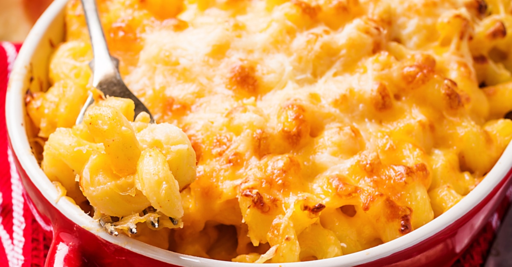

Mac and Cheese
Home
This mac and cheese recipe with a buttered bread crumb topping is creamy and comforting. It's easy to make the cheese sauce from scratch on your stovetop,
starting with a roux and adding milk, Cheddar, and Parmesan, resulting in a rich, decadent sauce that coats every nook and cranny of the noodles.
Serve this comfort-food macaroni and cheese casserole with grilled meats, sloppy Joes, fried chicken or alongside a salad for a meatless dinner.

Ingredients
- Box of uncooked macaroni noodles
- Butter (2 tablespoons for topping)
- Flour
- MIlk (Whole milk recommended)
- Cheese (Cheddar and Parmesan)
- Seasonings (Salt and pepper in sauce, paprika over topping)
- Bread Crumbs (Store-bought dried bread crumbs)
Steps
- Boil the macaroni in salted water until noodles are al dente. Drain and transfer to a preapred baking dish.
-
Melt butter, then whisk in the flour. Whisk in the milk, bring to a simmer, and stir in the cheeses. Seasons with salt and pepper and continue
simmering until the sauce is thick. Pour the sauce over the noodles and stir
-
Melt two tablespoons of butter in a skillet, add the bread crumbs, and toas until the crumbs are brown. Spread the topping over the macaroni and
cheese, then sprinkle with parprika.
- Bake in the preheated oven until the topping is golden brown